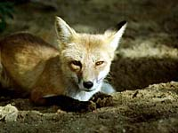

|
Climate:
| Total annual precipitation (mm) |
420 |
| Annual snowfall (cm) |
127 |
| Water deficit (mm) |
332 |
| Mean July temperature (C) |
+18.0 |
| Mean January temperature (C) |
-18.9 | |
The climate is subhumid, moderately cold. There is enough precipitation
to support tree growth. It is warmer than ecoregions to the north,
and drier.
|
Landscape:
The landscape is gently undulating to rolling plain of glacial
deposits. Well-drained black soils are predominant. The land slopes
eastward and is drained by the Battle, Saskatchewan, Assiniboine,
Qu'Appelle and Souris rivers and their tributaries. The land is
dotted with wetlands called prairie potholes.
|
![[ V F T ]](../../media/stuff/vft_spin.gif)
GPS: 50d 47.43m N, 103d 59.14m W, 2733 feet
21 July 96, 6:45 pm, Fuji Velvia 50, F8 1/100s
GPS: 52d 43.09m N, 108d 15.37m W, 1464 feet
03 July 96, 3:15 pm, Fuji Velvia 50, F8 1/30s
GPS: 50d 47.43m N, 103d 59.14m W, 2733 feet
21 July 96, 6:45 pm, Fuji Velvia 50, F8 1/100s
GPS: 50d 36.85m N, 102d 40.64m W, 1743 feet
20 July 96, 7:40 pm, Fuji Velvia 50, F8 1/30-2000s
GPS: 51d 30.49m N, 102d 39.93m W, 1594 feet
14 July 96, 5:20 pm, Fuji Velvia 50, F8 1/125-350s
GPS: 49d 49.87m N, 102d 16.57m W, 2521 feet
20 July 96, 2:00 pm, Fuji Velvia 50, F9.5 1/125s
Soil:
Vegetation:
The region has lost most of its native vegetation due to cultivation.
Small groves of aspen trees and willows on moist
and wet sites around wetlands give the landscape a park-like appearance.
Deciduous forest and grassland are intermingled. Usually, there
is a clear pattern of grassland on ridges and south-facing slopes
and aspen in depressions and north-facing slopes. Trembling Aspen
is the most common tree species, but willows, Balsam Poplar,
white birch, white elm, green ash and Manitoba
Maple are common. Bur oak, the most western species
of the eastern hardwood forests grows with aspen in the eastern
Qu'Appelle Valley (shown left).
|
Wildlife:

White-tailed deer are the most common big game species. Elk, black
bear, ducks, sharp-tailed grouse, ruffed grouse and ground squirrels
are also common. Moose Mountain Provincial Park has populations
of elk, moose and mule deer. Beaver, muskrat, coyote,
red fox (shown left), short-tailed and long-tailed weasel, badger, striped
skunk, raccoon and snowshoe hare occur in areas dominated
by aspen bluffs.
|
Bird diversity is high in native vegetation. Prairie potholes
provide significant habitat for waterfowl.
|
Human Use:
Uses include potash mining, oil and gas extraction, hunting
and recreation. Intensive agriculture for livestock and
grain is dominated by the production of spring wheat and other
cereal grains through continuous cropping and dryland methods.
Oilseeds and hay are also grown.
|
|